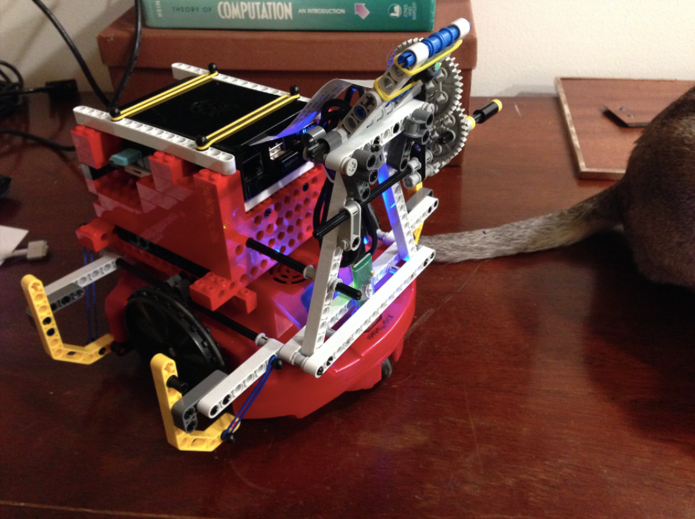

|

The initial goal of this project was to interface with the Scribbler S2 robot using a device other than the Fluke. The Fluke has low memory, latency issues due to Bluetooth connectivity, a low quality camera, and is ultimately pretty expensive with all things considered. For a final project in our CMSC 360: Intelligent Robotics and Perception class in Spring 2016, we decided to come up with an alternative solution to the Fluke.
News
| 20 Sep 2016 |
Website is up and running! Over the last couple of days we successfully installed Myro and Jupyter notebook server on the Rasberry Pi 3. Now we are able to mount the Pi on the Scribbler and use it to host an IPython notebook to program the Scribbler. |
|